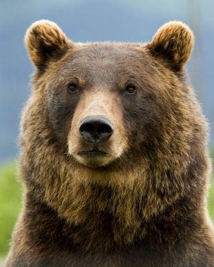
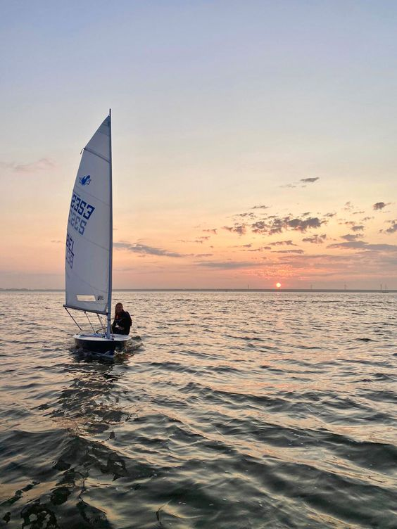

MY WORK
Here are some of my Photography.
Click on the images to make them bigger



Photographers don't take pictures.
We have created a "personal" website/blog, and our character is a hobby photographer. I am a professional photographer and digital artist. I particularly specialise in fine-art contemporary landscape and portrait photography, and I especially love shooting in Scotland and creating images with a "fairy tale" feel. My official gallery of photographs and digital art is at inpictur.es - where you can order prints and canvases and also purchase digital downloads; most of my images are available as smaller free downloads too! My BC Photography Blog is over on my gallery too. I love taking pictures because photography allows you to create images of special events, times, and places. It lets you record the specifics of an event – and it also allows you to share that event with friends and family, long after it's done and gone.Photography help you find beauty in the world. Using a camera to find beauty in the things and people around us, helps us to see things in a different light. A wonderful therapeutic benefit of photography, is that it can help us see the beauty surrounding us we just have take a moment to stop and look!
Beybilyn Caillan
Im really good at:
Photography
Digital arts
Photoshop
Here are some of my Photography.
Click on the images to make them bigger
I'd love your feedback!
Swing by for a cup of , or leave me a note: